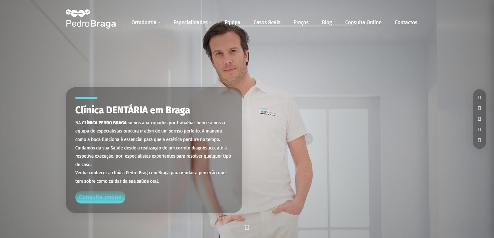
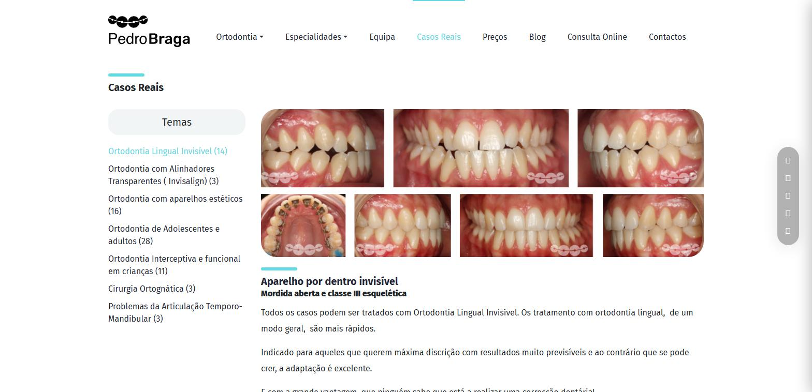
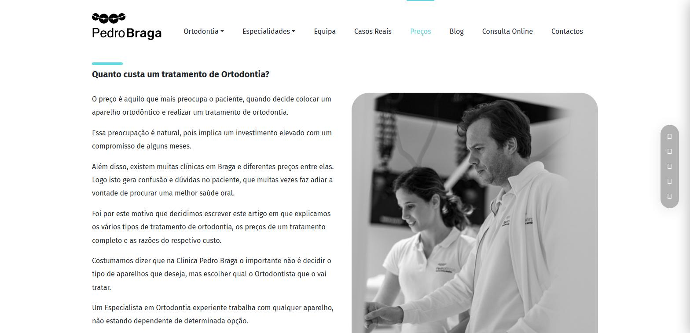
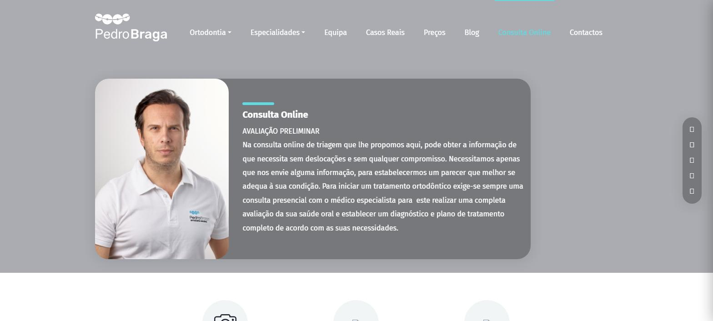

Renovação do site de uma clínica de ortodontia e medicina dentária em Braga: direção visual, arquitetura de informação, casos reais, blog e o reforço da consulta online.

A clínica já tinha site. O problema não era não existir — era ter envelhecido. O aspeto já não correspondia ao nível dos tratamentos que a clínica pratica, e isso, num setor onde o doente escolhe sobretudo por confiança, é um custo comercial silencioso.
O pedido tinha uma parte estética e três funcionais: renovar a imagem, publicar casos reais, criar um espaço de notícias, e reforçar a consulta online — que existia, mas passava despercebida.
Na ortodontia, o doente não escolhe o aparelho. Escolhe a pessoa que lho vai pôr.
Foi esse o eixo do projeto. Todo o site passou a trabalhar para a mesma conclusão: mostrar competência com evidência em vez de a afirmar com adjetivos.



A medida que interessa num projeto destes não é o tráfego do mês do lançamento. É se a clínica ainda está a usar aquilo que lhe foi entregue quando já ninguém está a olhar.
Nenhum destes conteúdos passou por nós. Foram publicados pela clínica, no backoffice, ao longo de dois anos — e é isso que os torna a única métrica que vale a pena mostrar aqui. Um site que o cliente não consegue alimentar morre no primeiro ano, e a maioria morre.
O design é da Backshift: direção visual, interface, arquitetura de informação e a estrutura editorial dos casos, dos preços e do blog.
O desenvolvimento é de Filipe Murteira, e o site é dele tanto quanto é nosso. Dizê-lo aqui custa nada e evita a coisa que mais depressa destrói a credibilidade de um portefólio: assinar trabalho de outra pessoa.